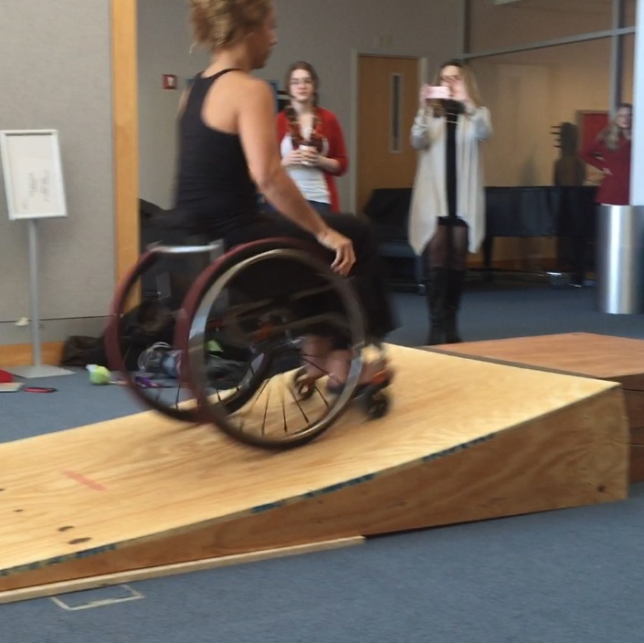

Kinetic Light Ramp
The kinetic light ramp is a project that took place in collaboration with professors Sara Hendren and Zhenya Zastavker, dancers Alice Sheppard and Laurel Lawson (who both use wheelchairs), and twelve students in Olin's mechanics physics foundation course during the Spring 2016 semester. The goal was to create something that redefines the dance stage as more than just a flat surface and rethinks the conventions of dance, disability, and accessibility in the built environment. For me, the project was an opportunity to take leadership over a larger team and learn how to interface and design with/for a user while applying physics and engineering to the unfamiliar field of dance.
Throughout the project we made sure that all of our decisions were informed by an understanding of the dancers we were designing for. Alice visited Olin at the beginning of the project, and we observed and recorded her navigating various slopes around Olin in her wheelchair. I led the creation of various small, simple ramps of varying slope that she could ride and test so we could get a feel for how she moves. Doing these tests helped us to stay on the same page, as Alice's understanding of physics and engineering was not the same as ours. For example, Alice initially wanted a ramp with a five foot high platform that she could roll up to. We knew it would be too difficult for her to navigate a ramp that high, and created an equally steep ramp, as well as other shallower ramps that would help us collectively agree on the right incline.
After Alice's visit we continued to keep in contact over video chat to continually validate our ideas and gather additional insights. For example, the steep curve in the corner of the ramp emerged from Alice's idea that the ramp should be about more than linear inclines, but we also needed to balance that with a considerable amount of surface to dance on. To fully realize this we had to develop a method of construction capable of large curves and landed on slotted pieces of plywood. I was in charge of bringing our designs to Alice and leading codesign sessions with her, coordinating the purchasing and fabrication of the ramp, and helping with the final construction. We used Rhino to CAD the ramp and used a CNC ShopBot to cut all of the pieces that slot together.
After completing the construction of the ramp, Alice visited Olin with her dance partner to test it and begin practicing their choreography. Approving of the design, we sent it to a professional stage contruction firm to build it for Alice's shows, and since then the ramp has traveled to California, New Mexico, New York City, Florida, and Oregon for their show "Descent." You can learn more about the performance here Alice describes the ramp below:
The ramp is a deeply flexible dance environment, a homeland for the artists that they can inhabit throughout the course of Descent. And it is also an active dance partner. In modern dance, we often say that we partner with the ground. On the ramp, Laurel and Alice must learn a new relationship with the surface. The ramp is a rich landscape that generates its own site-specific movement as Laurel and Alice discover the new movement that is possible because of new experiences of acceleration, resistance, and momentum.
The ramp is visually beautiful, inviting, an aesthetically pleasing object in itself, and it is also a deeply rigorous engineered environment. Balancing the physics of movement with the aesthetics of dance is one of the challenges of Descent.
Photo Credit Robbie Sweenie